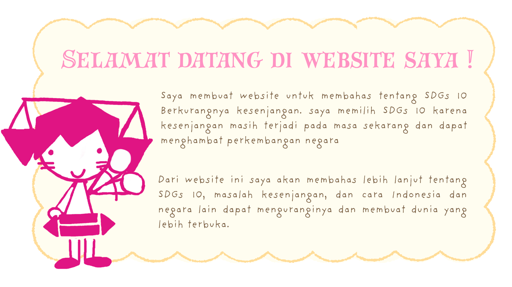
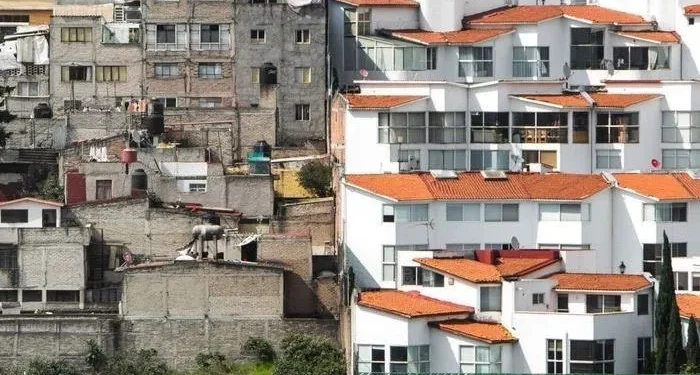

Inequality? is that a new verity?
Inequality, atau dalam bahasa Indonesia kesenjangan adalah keadaan dimana terjadi ketidaksamaan akses untuk menggunakan sumberdaya dalam sebuah masyarakat. Kesenjangan berarti tidak seimbang atau terjadi jarak di tengah masyarakat. Hal ini karena adanya perbedaan status sosial, ekonomi, dan lain lagi.
contoh dari hal ini adalah perbedaan pendapatan yang cukup besar anatara masyarakat kaya dan miskin, fasilitas umum yang belum ramah untuk orang yang memiliki disabilitas, dan kualitas pendidikan berbeda antara daerah perkotaan dan pedesaan.
Selain itu, diskriminasi terhadap kelompok minoritas juga perlu diperhatikan. Apalagi karena Indonesia merupakan negara yang memiliki berbagai macam jenis orang-orang dengan latar belakang yang beda.
Mengapa Kesenjangan Perlu Diatasi?
Pendidikan
ketidakadilan akses ke kualitas pendidikan yang lakak.
Pendapatan
Perbedaan pendapatan besar antara kaum kaya dan miskin.
Aksesibilitas
Fasilitas umum buat orang yang memiliki disabilitas kurang baik.
Diskriminasi
Perlakuan tidak adil terhadap kelompok minoritas.
.gif)
Mengapa kerjasama global penting
Mengurangi kesenjangan bukanlah tanggung jawab satu negara. Banyak permasalahan membutuhkan kerja sama dan kontribusi dari berbagai negara.
Melalui hubungan bilateral, regional, multilateral, dan internasional, negara-negara dapat saling berbagi pengetahuan, sumber daya, dan pengalaman untuk menciptakan pembangunan yang lebih adil dan merata.